In questa pagina è possibile visualizzare e gestire la lista utensili della macchina.
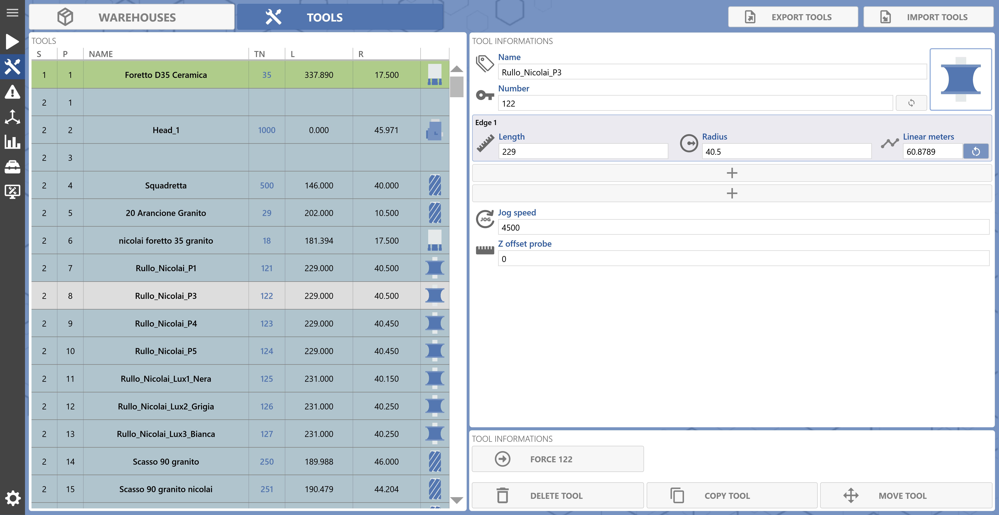
Lista utensili
Nella parte sinistra della pagina è possibile visualizzare la lista di utensili disponibili nei magazzini della macchina e del magazzino a terra con le principali informazioni utili dell’utensile.
Settore Settore dove è posizionato l’utensile.
1 = Settore riservato per l’utensile montato.
NOTA
La riga è rappresentata come segue:
2 = Settore per gli utensili nel magazzini fisici della macchina.
NOTA
La riga è rappresentata come segue:
3 = Settore per gli utensili nel magazzino a terra.
NOTA
La riga è rappresentata come segue:
Posizione Posizione dove è posizionato l’utensile relativa al settore.
Settore 1 ha solo 1 posizione riservata per l’utensile montato.
Settore 2 il numero di posizioni disponibili dipende dalla configurazione dei magazzini fisici.
Settore 3 ha 300 posizioni disponibili.
Nome Nome per identificare l’utensile.
Numero utensile Indica il correttore assegnato all’utensile.
Lunghezza Indica la lunghezza degli Edge dell’utensile.
Raggio Indica il raggio degli Edge dell’utensile.
Icona tipo utensile Icona per identificare il tipo di utensile.
Nuovo utensile
Selezionando un settore libero dalla lista di utensili è possibile andare a creare un nuovo utensile.
Nuovo utensile Pulsante che permette di aprire la finestra per creare un nuovo utensile nel settore e posizione selezionati.
Finestra nuovo utensile
Viene visualizzata la seguente finestra per inserire un nuovo utensile.
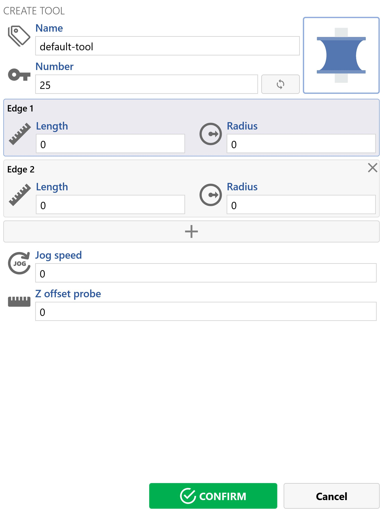
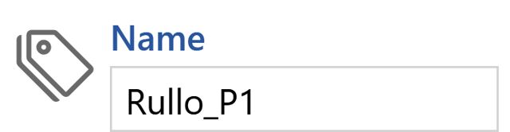
Nome Visualizzazione e modifica del nome dell’utensile.
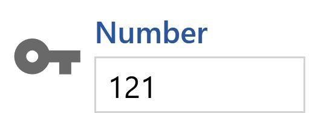
Numero utensile Visualizzazione del correttore associato all’utensile.
Scelta numero utensile Pulsante per aprire la finestra di scelta correttore dell’utensile.
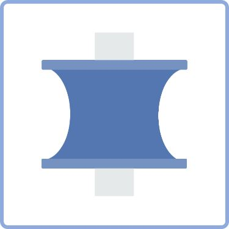
Scelta tipo utensile Pulsante per aprire la finestra di scelta del tipo di utensile.
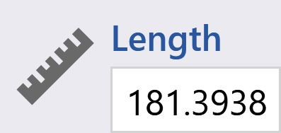
Lunghezza Edge Visualizzazione e modifica della lunghezza dell’Edge.
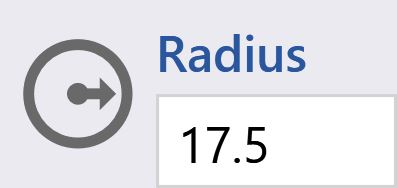
Raggio Edge Visualizzazione e modifica del raggio dell’Edge.
Rimozione Edge Pulsante per eliminare l’Edge dell’utensile.
NOTA
Visibile solo per gli utensili di tipo
Profilatura
.
Aggiunta Edge Pulsante per aggiungere un Edge all’utensile.
NOTA
Visibile solo per gli utensili di tipo
Profilatura
.
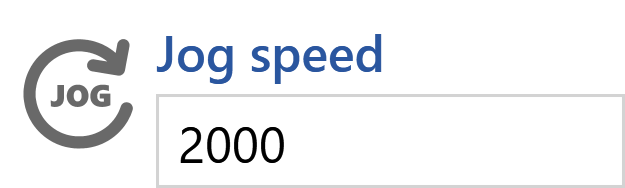
Velocità di JOG Visualizzazione e modifica della velocità di JOG dell’utensile.
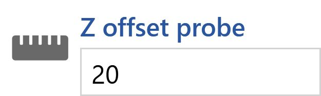
Offset Z per tastatura Visualizzazione e modifica dell’offset Z in fase di tastatura dell’Edge dell’utensile.
NOTA
Non visibile
per gli utensili
con punta diamantata
o
con rinvio angolare
.
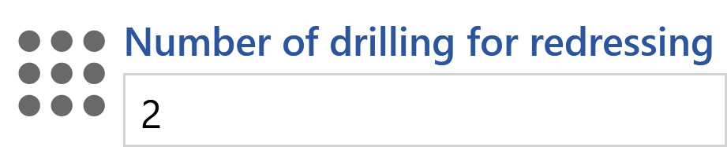
Numero di fori per ravvivatura Visualizzazione e modifica del numero di fori da effettuare in fase di ravvivatura utensile.
NOTA
Visibile solo per gli utensili
con punta diamantata
.
Numero riferimento testa rinvio angolare Visualizzazione e modifica del numero di riferimento della testa di rinvio angolare.
NOTA
Visibile solo per gli utensili
con rinvio angolare
.
Modifica numero utensile
Finestra di modifica del numero utensile, con lista di correttori specifici in base al tipo di utensile.
Numeri utensile visualizzati Indica il minimo e massimo numero utensile visualizzati in lista.
Pagina successiva Permette di andare alla pagina successiva per la selezione del numero utensile.
NOTA
Visibile solo se numeri utensile maggiore di
500
.
Pagina precedente Permette di andare alla pagina precedente per la selezione del numero utensile.
NOTA
Visibile solo se numeri utensile maggiore di
500
.
Numero utensile disponibile Indica che il numero utensile è disponibile.
Numero utensile occupato Indica che il numero utensile è già assegnato.
Conferma Pulsante per confermare il numero utensile selezionato.
Annulla Pulsante per chiudere la finestra senza aggiornare il numero utensile.
Modifica tipo utensile
Finestra per modificare il tipo di utensile.
Utensile Profilato Seleziona il tipo di utensile Profilato.
Utensile Foretto Seleziona il tipo di utensile Foretto.
Utensile Fresa Seleziona il tipo di utensile Fresa.
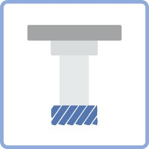
Utensile Fresa da scasso Seleziona il tipo di utensile Fresa da scasso.
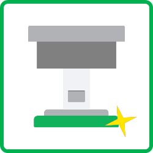
Utensile Piatto di lucidatura Seleziona il tipo di utensile Piatto di lucidatura.
Testa rinvio angolare Seleziona il tipo Testa rinvio angolare.
Utensile Disco rinvio angolare Seleziona il tipo di utensile Disco rinvio angolare.
Utensile Disco di lucidatura rinvio angolare Seleziona il tipo di utensile Disco di lucidatura rinvio angolare.
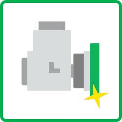
Utensile Piatto di lucidatura rinvio angolare Seleziona il tipo di utensile Piatto di lucidatura rinvio angolare.
Modifica dati utensile
Vengono visualizzati con la possibilità di modifica, i dati dell’utensile selezionato.
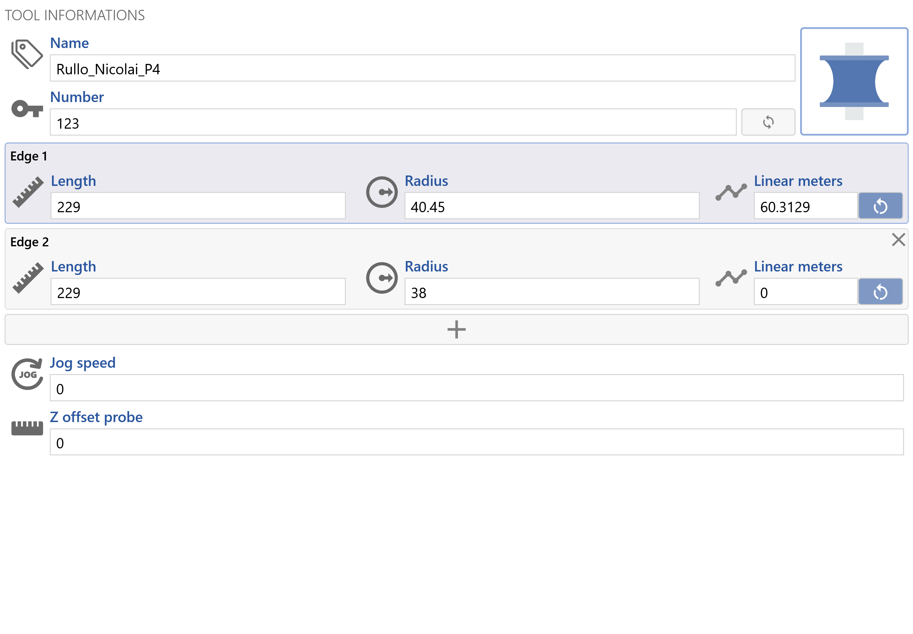
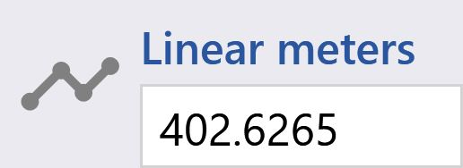
Metri lineari Edge Visualizzazione della statistica dei metri lineari lavorati dall’Edge.
Reset metri lineari Edge Pulsante per azzerare la statistica dei metri lineari dell’Edge.
Comandi utensile
Lista di comandi per gestire gli utensili.
NOTA
I comandi sono disabilitati se viene selezionato l’utensile montato.
Forza utensile montato Permette di forzare l’utensile selezionato come utensile montato.
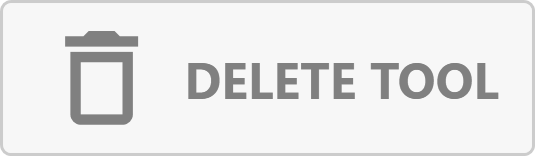
Elimina utensile Permette di eleminare l’utensile selezionato.
NOTA
Viene chiesta una conferma per l’eliminazione dell’utensile:
Copia utensile Permette di creare una copia dell’utensile selezionato.
Sposta utensile Permette di spostare il settore e/o la posizione dell’utensile selezionato.
Copia utensile
Viene aperta una finestra per decidere il nome, numero utensile, settore e posizione del nuovo utensile copiato.
Nome Permette di modificare il nome del nuovo utensile.
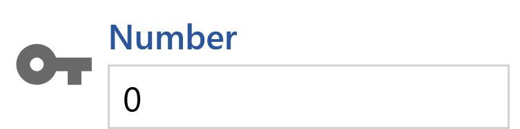
Numero utensile Visualizza il numero utensile.
Scelta numero utensile Pulsante per aprire la finestra di scelta correttore dell’utensile.
Posizione del settore Permette di selezionare la posizione relativa al settore del nuovo utensile.
Conferma Pulsante di conferma e inserimento del nuovo utensile.
Annulla Pulsante per uscire dalla finestra senza inserire il nuovo utensile.
Sposta utensile
Viene aperta una finestra per nuovo settore e posizione dell’utensile selezionato.